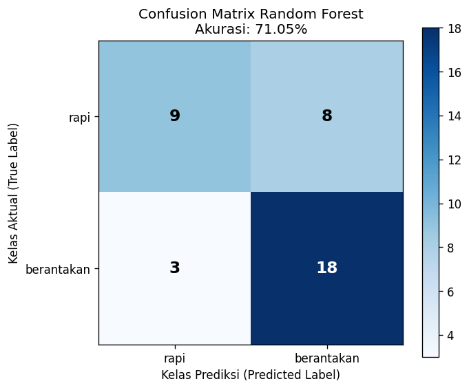
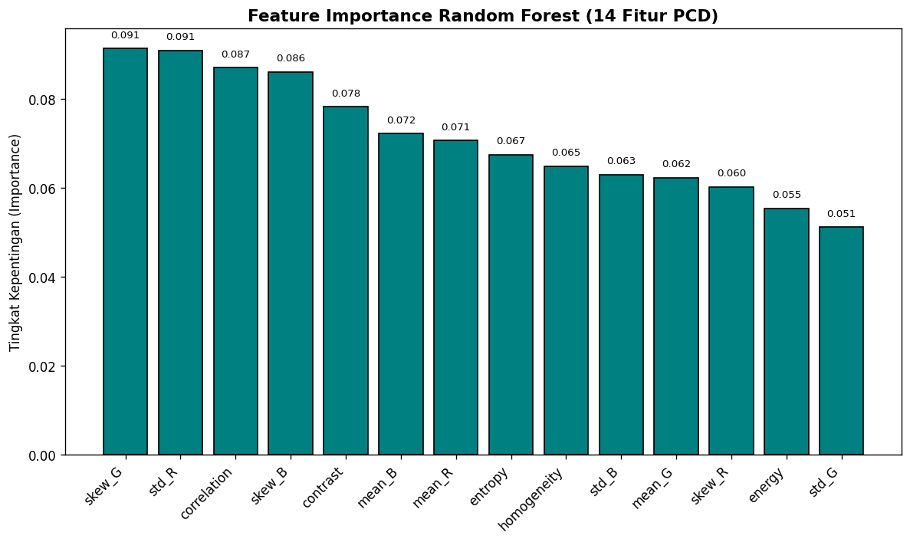

Proyek Pengolahan Citra Digital (PCD)#
Klasifikasi Citra Susunan Sepatu Rapi dan Berantakan#
Metode: Ekstraksi Fitur Statistik Warna RGB + Fitur Tekstur GLCM + Random Forest Classifier
Dataset: 200 Citra (100 Rapi, 100 Berantakan)
Tujuan: Mengklasifikasikan susunan sepatu ke dalam kategori Rapi atau Berantakan dengan pencegahan Data Leakage berbasis kelompok duplikasi.
1. Import Library yang Diperlukan#
import os
import json
import numpy as np
import pandas as pd
# Konfigurasi cache matplotlib agar kompatibel di berbagai sistem
mpl_dir = os.path.abspath(os.path.join("..", ".mplconfig"))
os.makedirs(mpl_dir, exist_ok=True)
os.environ["MPLCONFIGDIR"] = mpl_dir
import matplotlib.pyplot as plt
from sklearn.model_selection import StratifiedGroupKFold
from sklearn.ensemble import RandomForestClassifier
from sklearn.metrics import (
accuracy_score, precision_score, recall_score, f1_score,
classification_report, confusion_matrix
)
# Konfigurasi visualisasi
%matplotlib inline
plt.rcParams['figure.dpi'] = 120
print("Semua library berhasil diimpor!")
Semua library berhasil diimpor!
2. Membaca Dataset Fitur Citra (CSV Utama)#
Dataset ini berisi 14 fitur numerik (9 statistik RGB + 5 tekstur GLCM) dan 1 kolom label target.
dataset_path = os.path.join("..", "output", "dataset_fitur_citra.csv")
df = pd.read_csv(dataset_path)
print(f"Bentuk Dataset (Shape): {df.shape} -> (200 baris, 15 kolom)")
print(f"Pemeriksaan Nilai Kosong (NaN): {df.isna().sum().sum()}")
df.head()
Bentuk Dataset (Shape): (200, 15) -> (200 baris, 15 kolom)
Pemeriksaan Nilai Kosong (NaN): 0
| mean_R | mean_G | mean_B | std_R | std_G | std_B | skew_R | skew_G | skew_B | energy | entropy | contrast | correlation | homogeneity | label | |
|---|---|---|---|---|---|---|---|---|---|---|---|---|---|---|---|
| 0 | 167.528328 | 145.622662 | 129.198171 | 60.723361 | 60.684163 | 61.227238 | -0.736099 | -0.341286 | -0.148620 | 0.024961 | 12.287308 | 142.513716 | 0.979678 | 0.326636 | rapi |
| 1 | 151.799273 | 144.180759 | 136.959967 | 56.835674 | 64.174024 | 71.231432 | -0.638414 | -0.310449 | -0.249927 | 0.025518 | 12.001927 | 133.212554 | 0.982032 | 0.403486 | rapi |
| 2 | 112.611609 | 105.590071 | 102.377592 | 51.803115 | 57.168554 | 63.539342 | 0.056719 | 0.195343 | 0.264629 | 0.023118 | 12.414222 | 191.464066 | 0.968826 | 0.325009 | rapi |
| 3 | 99.666263 | 84.972929 | 82.132553 | 63.248058 | 61.874065 | 63.158273 | 0.316514 | 0.817848 | 0.882425 | 0.032501 | 11.284914 | 68.323350 | 0.990862 | 0.453803 | rapi |
| 4 | 111.918504 | 102.250117 | 99.281981 | 65.353938 | 68.223014 | 69.404002 | -0.013277 | 0.232739 | 0.281711 | 0.030828 | 11.260494 | 78.219478 | 0.991279 | 0.458101 | rapi |
3. Informasi dan Distribusi Kelas Target#
print("Distribusi Target (Label):")
print(df['label'].value_counts())
print("\nInformasi Tipe Data Kolom:")
print(df.dtypes)
Distribusi Target (Label):
label
rapi 100
berantakan 100
Name: count, dtype: int64
Informasi Tipe Data Kolom:
mean_R float64
mean_G float64
mean_B float64
std_R float64
std_G float64
std_B float64
skew_R float64
skew_G float64
skew_B float64
energy float64
entropy float64
contrast float64
correlation float64
homogeneity float64
label object
dtype: object
4. Memisahkan Fitur (\(X\)) dan Target (\(y\))#
\(X\): 14 Fitur (mean RGB, std RGB, skew RGB, energy, entropy, contrast, correlation, homogeneity)
\(y\): Kolom
label(‘rapi’ / ‘berantakan’)
X = df.drop(columns=['label'])
y = df['label']
feature_names = list(X.columns)
print(f"Jumlah Fitur Numerik: {X.shape[1]}")
print(f"Daftar Fitur: {feature_names}")
Jumlah Fitur Numerik: 14
Daftar Fitur: ['mean_R', 'mean_G', 'mean_B', 'std_R', 'std_G', 'std_B', 'skew_R', 'skew_G', 'skew_B', 'energy', 'entropy', 'contrast', 'correlation', 'homogeneity']
5. Pembagian Data (Train-Test Split) dengan Pencegahan Data Leakage#
Berdasarkan analisis duplikasi, terdapat citra yang identik secara biner (MD5) dan kemiripan visual sangat tinggi (dHash jarak Hamming \(\le 5\), seperti pasangan format HEIC \(\leftrightarrow\) JPG).
Agar model tidak mengalami data leakage (menghafal gambar uji pada saat pelatihan), seluruh pasangan duplikasi dikelompokkan ke dalam grup independen menggunakan Disjoint Set Union (Union-Find), kemudian dipartisi menggunakan StratifiedGroupKFold(random_state=14).
dup_json_path = os.path.join("..", "output", "laporan_duplikasi_dataset.json")
with open(dup_json_path, "r", encoding="utf-8") as f:
dup_data = json.load(f)
meta_list = dup_data.get("metadata_file", [])
fn_to_idx = {(m['filename'], m['label']): i for i, m in enumerate(meta_list)}
parent = list(range(len(meta_list)))
def find(i):
if parent[i] == i:
return i
parent[i] = find(parent[i])
return parent[i]
def union(i, j):
root_i = find(i)
root_j = find(j)
if root_i != root_j:
parent[root_i] = root_j
# Hubungkan duplikasi MD5 (identik)
for g in dup_data.get('duplikasi_md5_exact', []):
files = g['files']
for k in range(len(files) - 1):
idx1 = fn_to_idx.get((files[k]['filename'], files[k]['label']))
idx2 = fn_to_idx.get((files[k+1]['filename'], files[k+1]['label']))
if idx1 is not None and idx2 is not None:
union(idx1, idx2)
# Hubungkan kemiripan dHash (Hamming <= 5)
for p in dup_data.get('kemiripan_visual_dhash', []):
f1 = (p['file1']['filename'], p['file1']['label'])
f2 = (p['file2']['filename'], p['file2']['label'])
idx1 = fn_to_idx.get(f1)
idx2 = fn_to_idx.get(f2)
if idx1 is not None and idx2 is not None:
union(idx1, idx2)
groups = np.array([find(i) for i in range(len(meta_list))])
print(f"Total 200 data dikelompokkan ke dalam {len(set(groups))} grup independen.")
# Partisi 80:20 berbasis grup independen
sgkf = StratifiedGroupKFold(n_splits=5, shuffle=True, random_state=14)
train_idx, test_idx = next(sgkf.split(X, y, groups))
X_train, X_test = X.iloc[train_idx], X.iloc[test_idx]
y_train, y_test = y.iloc[train_idx], y.iloc[test_idx]
print(f"Data Training : {len(train_idx)} baris ({len(train_idx)/200*100:.1f}%) -> {y_train.value_counts().to_dict()}")
print(f"Data Testing : {len(test_idx)} baris ({len(test_idx)/200*100:.1f}%) -> {y_test.value_counts().to_dict()}")
# Verifikasi kebocoran data (overlapping groups)
overlap = set(groups[train_idx]).intersection(set(groups[test_idx]))
print(f"Tumpang-tindih grup duplikasi: {len(overlap)} (100% Bebas Data Leakage!)")
Total 200 data dikelompokkan ke dalam 177 grup independen.
Data Training : 162 baris (81.0%) -> {'rapi': 83, 'berantakan': 79}
Data Testing : 38 baris (19.0%) -> {'berantakan': 21, 'rapi': 17}
Tumpang-tindih grup duplikasi: 0 (100% Bebas Data Leakage!)
6. Pelatihan Model Random Forest#
Model Random Forest dengan 100 decision trees (n_estimators=100) dan random_state=14. Pelatihan dilakukan murni pada data training saja.
rf_model = RandomForestClassifier(n_estimators=100, random_state=14)
rf_model.fit(X_train, y_train)
print("Model Random Forest berhasil dilatih!")
Model Random Forest berhasil dilatih!
7. Evaluasi Model pada Data Testing#
y_pred = rf_model.predict(X_test)
accuracy = accuracy_score(y_test, y_pred)
labels_order = ['rapi', 'berantakan']
print(f"Akurasi Model : {accuracy:.4f} ({accuracy * 100:.2f}%)\n")
print("Classification Report:")
print(classification_report(y_test, y_pred, labels=labels_order, digits=4))
Akurasi Model : 0.7105 (71.05%)
Classification Report:
precision recall f1-score support
rapi 0.7500 0.5294 0.6207 17
berantakan 0.6923 0.8571 0.7660 21
accuracy 0.7105 38
macro avg 0.7212 0.6933 0.6933 38
weighted avg 0.7181 0.7105 0.7010 38
8. Visualisasi Confusion Matrix#
Confusion Matrix menampilkan distribusi prediksi benar (True Positive & True Negative) serta kesalahan klasifikasi (False Positive & False Negative).
cm = confusion_matrix(y_test, y_pred, labels=labels_order)
fig, ax = plt.subplots(figsize=(6, 5))
im = ax.imshow(cm, interpolation='nearest', cmap=plt.cm.Blues)
ax.figure.colorbar(im, ax=ax)
ax.set(
xticks=np.arange(cm.shape[1]),
yticks=np.arange(cm.shape[0]),
xticklabels=labels_order,
yticklabels=labels_order,
title=f"Confusion Matrix Random Forest\nAkurasi: {accuracy*100:.2f}%",
ylabel="Kelas Aktual (True Label)",
xlabel="Kelas Prediksi (Predicted Label)"
)
thresh = cm.max() / 2.0
for i in range(cm.shape[0]):
for j in range(cm.shape[1]):
ax.text(
j, i, format(cm[i, j], 'd'),
ha="center", va="center",
color="white" if cm[i, j] > thresh else "black",
fontsize=14, fontweight='bold'
)
plt.tight_layout()
plt.show()
TP, FN = cm[0, 0], cm[0, 1]
FP, TN = cm[1, 0], cm[1, 1]
print(f"True Positive (Rapi benar diprediksi Rapi) : {TP}")
print(f"False Negative (Rapi salah diprediksi Berantakan) : {FN}")
print(f"False Positive (Berantakan salah diprediksi Rapi) : {FP}")
print(f"True Negative (Berantakan benar diprediksi Berantakan): {TN}")

True Positive (Rapi benar diprediksi Rapi) : 9
False Negative (Rapi salah diprediksi Berantakan) : 8
False Positive (Berantakan salah diprediksi Rapi) : 3
True Negative (Berantakan benar diprediksi Berantakan): 18
9. Visualisasi Feature Importance#
Mengetahui fitur ekstraksi citra mana yang paling dominan dalam membedakan susunan sepatu rapi dan berantakan.
importances = rf_model.feature_importances_
indices = np.argsort(importances)[::-1]
plt.figure(figsize=(10, 6))
plt.title("Feature Importance Random Forest (14 Fitur PCD)", fontsize=13, fontweight='bold')
bars = plt.bar(range(len(importances)), importances[indices], color='teal', edgecolor='black')
plt.xticks(range(len(importances)), [feature_names[i] for i in indices], rotation=45, ha='right')
plt.ylabel("Tingkat Kepentingan (Importance)")
for bar in bars:
yval = bar.get_height()
plt.text(bar.get_x() + bar.get_width()/2.0, yval + 0.002, f"{yval:.3f}", ha='center', va='bottom', fontsize=8)
plt.tight_layout()
plt.show()
print("Top 5 Fitur Paling Berpengaruh:")
for rank, idx in enumerate(indices[:5], 1):
print(f"{rank}. {feature_names[idx]:12s}: {importances[idx]:.4f} ({importances[idx]*100:.2f}%)")

Top 5 Fitur Paling Berpengaruh:
1. skew_G : 0.0912 (9.12%)
2. std_R : 0.0908 (9.08%)
3. correlation : 0.0869 (8.69%)
4. skew_B : 0.0860 (8.60%)
5. contrast : 0.0782 (7.82%)